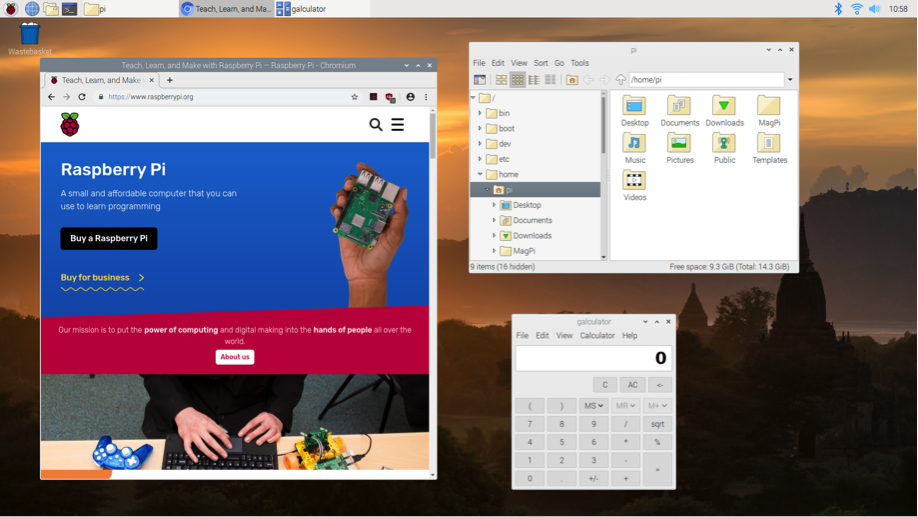
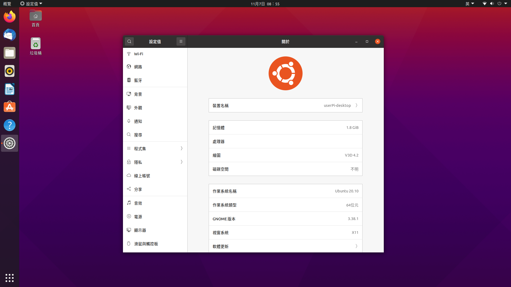
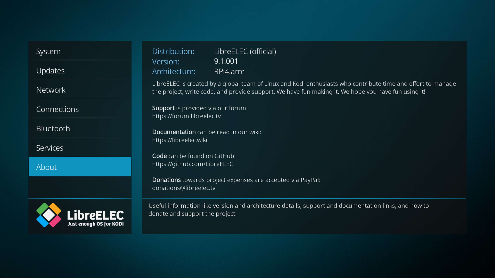
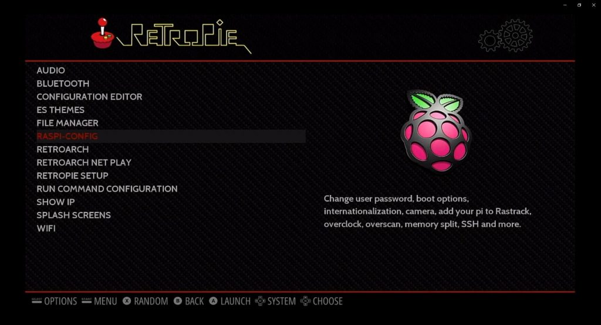
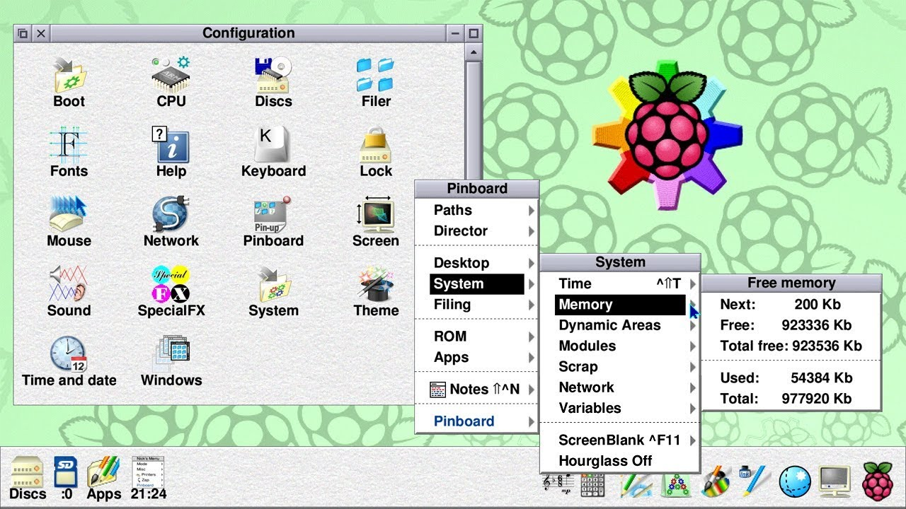
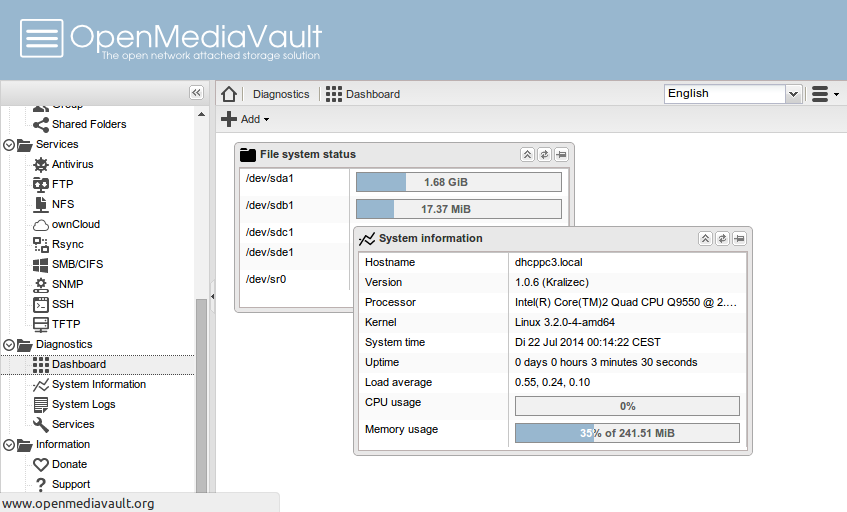
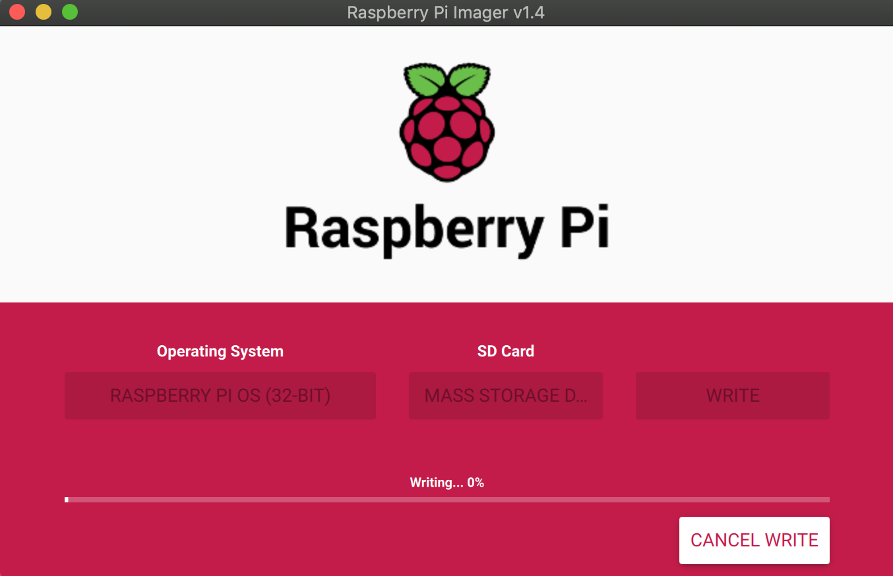
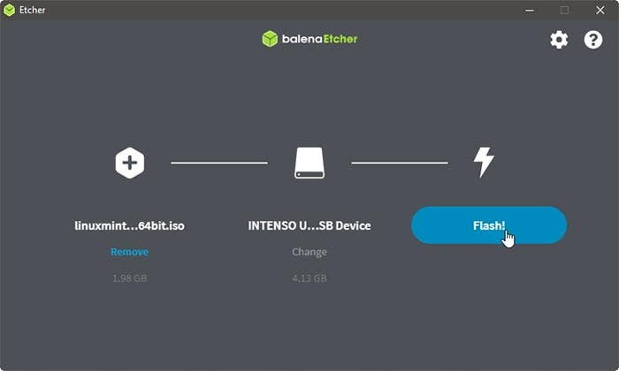
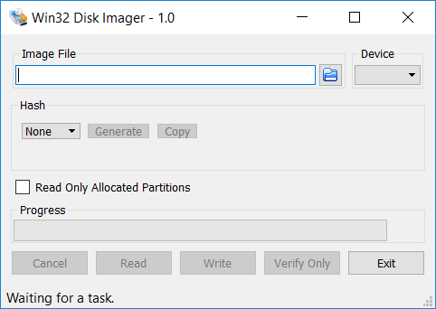

TOP
回首頁
Raspberry Pi相關下載
Raspberry Pi OS

NOOBS
Ubuntu Desktop

Ubuntu Server
Ubuntu MATE
LibreELEC

RetroPie

RISC OS

OpenMediaVault

Raspberry Pi Imager

balenaEtcher

Win32 Disk Imager

E N D